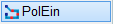
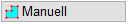
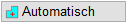
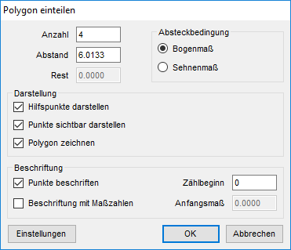
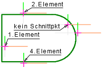
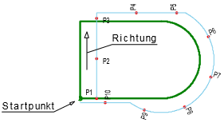
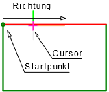
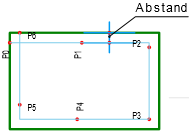
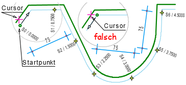
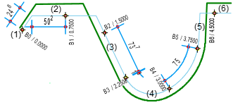

")
")
Setzen von Hilfspunkten an einem aus Linien und Teilkreisen zusammengesetzten Linien-/Polygonzug. Die Hilfspunkte können mit oder ohne gleichen Abstand (Differenz) zum Bezugspolygon gesetzt werden.
So wird's gemacht:
§Geben Sie den seitlichen Versatz zum Bezugselement an und bestätigen Sie die Eingabe mit der Eingabetaste. [Abstand].
§Wählen Sie, ob Sie einzelne Zeichenelemente anklicken möchten oder ein geschlossenes Polygon automatisch ausgewählt werden soll.
 |
Manuelle Auswahl der Zeichenelemente. [Elemente wählen (Umrissgeometrie)]. §Klicken Sie die Elemente nacheinander auf der Seite an, zu der die Abstandsangabe berücksichtigt werden soll. |
 |
Automatische Auswahl der Zeichenelemente. [Startpunkt (Umrissgeometrie)]. Vom angeklickten Startpunkt in Richtung Elementende werden alle direkt anschließenden Linien oder Bögen dem Polygon hinzugefügt. §Klicken Sie den Startpunkt auf der Seite an, zu der die Abstandsangabe berücksichtigt werden soll. |
§Um die Polygoneingabe abzuschließen, klicken Sie auf  .
.
Der Dialog Polygon einteilen wird geöffnet. Wenn Sie die Polygoneingabe mit Rechtsklick abschließen, wird der Dialog Polygon einteilen übersprungen und Abfrage [Abstand] wieder aktiv.
§Geben Sie im Dialog an, wie das Polygon durch Hilfspunkte eingeteilt werden soll.

Einstellungen für die Polygoneinteilung und -darstellung.  Anzahl Geben Sie die Anzahl der Abschnitte auf dem Polygon ein. Wenn Sie die Eingabe bestätigen, wird der Abstand angezeigt. Es ergibt sich kein Rest. Abstand Geben Sie den Abstand zwischen den Hilfspunkten in Metern ein. Die Anzahl wird in der Eingabe angezeigt. Der Rest wird berechnet. Rest Anzeige für den Rest. Absteckbedingungen
Darstellung
Beschriftung
Öffnet den Dialog Einstellungen Polygon einteilen.
Schließt den Dialog. Alle Änderungen werden übernommen.
Schließt den Dialog. Alle Änderungen werden verworfen. |


Wenn Sie die Einstellungen im Dialog mit OK bestätigen, wird das Polygon den Angaben entsprechend gezeichnet.
Beispiel: Manuelle/Automatische Auswahl
Manuelle Auswahl  |
 |
Automatische Auswahl  |
 |
Die Elemente 1 - 4 werden mit unterschiedlichen Abständen zum Bezugspolygon angeklickt. Beachten Sie beim 1. Element die Lage des Cursors auf der Innenseite des Polygons. |
Die obere Linie des Polygons wird an der Innenseite angeklickt (s. Cursor). Die Hilfspunkte werden im Uhrzeigersinn mit gleichem Abstand gezeichnet. |
||
Beispiel: Manuelle/Automatische Auswahl
Sie können die Beispielzeichnung mit [Konst1 | Linien] nachzeichnen. Für den Bogen können Sie die Funktion [ausrun] (Elemente ausrunden) nutzen.
Wenn Sie eine Zeichnung vorbereitet haben, gehen Sie wie folgt vor:
Einteilung über Sehnenlänge
 |
Eingabeeinheit: m (Meter). Bestätigen Sie alle Eingaben mit der Eingabetaste. §Geben Sie als Abstand der 1. Linie den Wert 0.1 ein. [Abstand]. §Wählen Sie den Auswahlmodus Automatisch. [Startpunkt (Umrissgeometrie)]. §Klicken Sie die schräge Linie links unten auf der Innenseite an (s. Cursor). §Klicken Sie auf §Geben Sie im Dialog den Abstand der Hilfspunkte ein: 0.75. §Wählen Sie als Absteckbedingung die Option Sehnenmaß. §Um die Einteilung vorzunehmen und den Dialog zu schließen, klicken Sie auf OK. |
Einteilung über Bogenlänge
 |
Eingabeeinheit: m (Meter). 1. Linie Nr. 1 zeichnen §Geben Sie als Abstand der 1. Linie den Wert 0.05 ein. [Abstand]. §Wählen Sie den Auswahlmodus Manuell. [Elemente wählen (Umrissgeometrie)]. §Klicken Sie die 1. Linie auf der "rechten" Seite (Innenseite) an. §Klicken Sie die rechte Maustaste, um einen anderen Abstand einzugeben. 2. Linie Nr. 2 zeichnen §Geben Sie als Abstand der 2. Linie den Wert 0.175 ein. §Klicken Sie mit dem Cursor in den Bereich unterhalb der 2. Linie. §Klicken Sie die rechte Maustaste, um einen anderen Abstand einzugeben. 3. Linien 3 - 6 zeichnen §Geben Sie als Abstand der 3. Linie den Wert 0.1 ein. §Klicken Sie die 3. Linie auf der "rechten" Seite an. §Klicken Sie mit demselben Abstand die 4., 5. und 6. Linie an. Achten Sie beim Anklicken auf die Lage des Cursors. §Klicken Sie auf 4. Polygon einteilen §Wählen Sie als Absteckbedingung die Option Bogenmaß. §Um die Einteilung vorzunehmen und den Dialog zu schließen, klicken Sie auf OK. |
Zugehörige Referenzen: